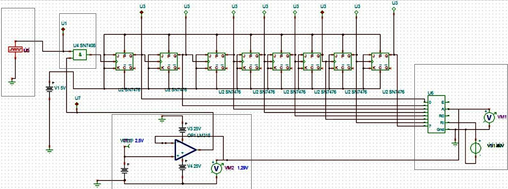
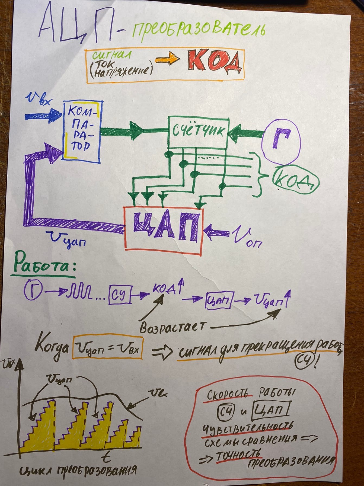

Введение
Поставленные задачи:
- Понять работу схемы компаратора 2-х двоичных чисел и продемонстрировать работу модели на её основе.
- Понять работу схемы компаратора 2-х аналоговых сигналов (двух напряжений) и продемонстрировать работу модели на её основе.
- Изучить данную схему (системы блоков) АЦП и продемонстрировать работу модели на её основе.
- Изучить данную схему АЦП на основе микросхемы (ADC) и продемонстрировать работу модели на её основе.
Задача 1
Дана схема компаратора 2-х двоичных чисел:

Перед нами стоит задача преобразовать данную схему в рабочу модель, которая будет срванивать два четырёхразрядных двоичных числа и показать как сравниваются биты двух двоичных чисел.
| X1 | X2 | F |
| 0 | 0 | 0 |
| 1 | 0 | 1 |
| 0 | 1 | 1 |
| 1 | 1 | 0 |
Для сравнения каждого разряда мы будем использовать логический элемент "Исключающее ИЛИ" имеющий такую таблицу истинности.
Таким образом, мы ожидаем получить логическую 1 на выходе компаратора тогда и только тогда, когда со всех наших сумматоров (элементов "Исключающих ИЛИ") придёт логический 0.
Задача 2
Дана схема компаратора 2-х аналоговых сигналов:

Индикатором на этой схеме мы будем отмечать момент равенства сигналов.
Мы ожидаем получить устройство, которое будет сравнивать сигналы U1 и U2, меняющее выходной сигнал при U2>=U1:
Задача 3
Дана схема (системы блоков) АЦП:
В этой задаче мы должны продемонстрировать работу схемы, преобразующей подаваемые сигналы в двоичные числа, благодаря которым будем получать выходное напряжение, зависящее от поданного значения.
Задача 4
Дана схема АЦП преобразователя:
Перед нами стоит задача преобразовать данную схему в рабочу модель, которая будет преобразовывать сигнал (напряжение) на входе в десятичное число.
В зависимости от значения напряжения на входе рассчитываются число по определенной формуле, которое и будет определять какому значению соответствует, поданное нами напряжение.